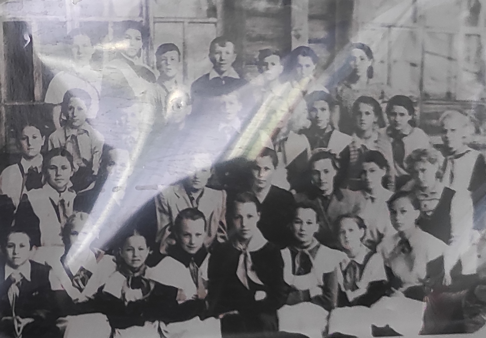

1870 год – создана Кожласолинская церковно-приходская школа
1933 год – в селе Кожла-Сола открылась небольшая начальная школа.
1939 год – школа из начальной преобразовали в семилетнюю.

1957 год – часть Красногорской школы объединили с Кожласолинской
и образовалась Красногорская средняя школа №2 
В послевоенные годы Кожласолинская семилетняя школа располагалась в двух зданиях:
в небольшом помещении занимались начальные(1-4) классы, а 5-7 классы – в бывшей церкви.
1955 год – Кожласолинская семилетняя школа перешла в здание лесотехникума, расположенного на улице Центральной 50.
1973-1975 годы строительство нового трехэтажного здания школы в микрорайоне ММЗ
6 февраля 1976 года – торжественное открытие нового здания
После 1957 г. в Красногорской школе №2 работали: Никифоров Иван Иванович, Щеглов Михаил Павлович, Гоголев А., Нина Тимофеевна, Степанова Кира, Петров Н.А., Клочков Иван Федорович, Дождиков Александр Андреевич, Торбеева Валентина Ивановна, Ларионова Маргарита Тихонова, Анкудинова Полина Кузьмина, Дружинин Николай Никифорович, Растогуева Зоя Васильевна, Яковлева Алевтина Лазаревна.
Первыми учителями школы были: в начале века Степанида Николаевна Протодбякова, в начале тридцатых годов и перед самой войной чуть ли не единственным учителем в Кожла-Соле был Власов
В первом выпускном классе под руководством Н.Я Павловского насчитывалось 29 учеников, из них 19 юношей.
Среди выпускников тех лет: Шарпатов Владимир Ильич, Герой России: Астапова Надежда Алексеевна, завуч по воспитательной работе и учитель русского языка и литературы; Гончарова Галича Петровна, медсестра школа.
Фецюх Петр Семёнович родился в 1940 году в г. Устье-Русский Горлицкого р-на Краковской области. Быстро пролетели школьные годы и служба в армии. 1962-1966 г. – учёба в Марийском педагогическом институте им. М.Крунской.
По окончанию направлен директором в Красногорскую среднюю школу №1.
1975-2001 г. – директор Красногорской средней школы №2.
Это целая эпоха в истории школы, имеет много почетных грамот, был избран депутатом Госсобрания РМЭ.
Учительский коллектив насчитывал 12 человек: Охотникова Тамара Ивановна, Охотникова Галина Ивановна, Битунова Клавдия Никифоровна, Тимофеевна Анна Емельянова, Крылова Нина Георгиевна, Болдаевская Людмила Владимировна, Нигометзянова Хабира Султанова, Охотникова Елизавета Дмитриевна, Судаков Петр Петрович, Билетова Софья Степанова, Вишнякова Михайловна, Бякова Анна Михайловна, Двинянинов Альберт Валентинович.
Михайлова Раиса Георгиевна родилась в 1956 году в д. Анис-Сола Звениговского р-на.
Мечтала работать с детьми, поэтому после школы поступила в Оршанское училище.
С 1977 по 1995 работала пионервожатой. закончив одновременно Марийский педагогический институт.
С 1996 по 2000 г. – завуч по воспитательной, а затем по учебно-методической работе.
С 2001 года Раиса Георгиевна – директор Красногорской средней школы №2.